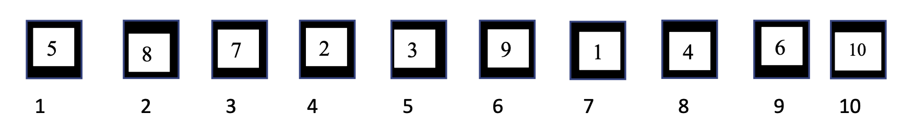

Let's now try out another (weaker and not-so-obvious) version of the 100 Prisoners Problem now that relies on a somewhat different solution!
Alice, Bob and Charlie play a game with Bob and Charlie on one team and Alice on the other. There are 100 boxes, labelled 1 to 100, and 100 notes, again labelled 1 to 100. The game proceeds as follows:
– With Bob watching, Alice places one note in each box as she pleases.
– Bob is then allowed to pick two boxes and switch their notes. He may only do this once.
– Alice sees Bob’s move and then picks a number N between 1 and 100.
– Bob now leaves and Charlie enters without speaking. Alice tells Charlie the number N.
– Finally, Charlie may open 50 boxes to try and find the box with number N. If Charlie picks 50 boxes at random, they win with a 50% chance.
Show that there is a strategy by which they can always win, no matter how Alice plays.
Before we define a strategy, we define a methodology to approach this scenario. Let the manner in which Charlie opens 50 boxes be defined by a sequence (inspired from a linked list structure) in which Charlie opens the box numbered \(N\) to find a note numbered \(X_N\). Charlie would then open the box numbered \(X_N\) to find a note number \(X_{X_N}\), and continue this process to \(X_{X_{X_N}}\), and so forth. Therefore, we have defined a method of traversing through the notes and boxes.
The following figure is a diagrammatic representation for the case of 10 boxes. We use a program to randomize the numbers on the notes with unique numbers from 1 to 10.

Then, for any number we start with:
1) If we start with N = 10, then we are done.
2) If we start with any other arbitrary number, there is a longest theoretically possible cycle (of length 9)
of boxes that can be traversed. (In this system, of course this theoretical limit is reduced to 4). This cycle can be found by traversing the system using our traversal mechanism to enumerate the cycle that starts with each number:
N = 1: (1 5 3 7)
N = 2: (2 8 4)
N = 3: (3 7 1 5)
N = 4: (4 8 4)
N = 5: (5 7 1)
N = 6: (6 9)
N = 7: (7 1 5 3)
N = 8: (8 4 2)
N = 9: (9 6)
Therefore, we have shown that such a method of traversing through the notes and boxes reveals the existence of cycles. This can be proven by realizing that the only way in which Charlie can land on a box numbered \(N\) is if another box contains a note numbered \(N\). Therefore, the winning strategy would be to reduce the length of such a cycle to \(50\) or less such that the last note Charlie chooses would be \(N\), which guides Charlie back to the box numbered \(N\).
We claim that the strategy for which Bob and Charlie can always win if Bob splits the longest cycle into two smaller cycles (each of which should have a length that is lesser than or equal to \(50\)). We will first describe a procedure to implement this strategy, and then we will prove that this strategy guarantees a win. To define this procedure systematically, let the cycle be denoted by the variable \(V\).
1) When \(|V|<50\), no splitting is required, a win is guaranteed.
To prove this, note that that there are no cycles of length greater than \(50\).
So, when Charlie traverse the cycle (which exists), if the box \(N\) contains the note \(N\), then we are immediately done.
If not, then the cycle that starts with box \(N\) and ends with the box containing the note numbered \(N\) will have length \(\leq 50\).
Since only one cycle starts with box \(N\), the length of such a cycle is constrained to have a size that is atmost \(50\).
Since Charlie chooses the last vertex of the cycle that is the box with number \(N\) (in atmost \(50\) moves), we get a win.
2) If \(|V| \geq 50\), we define the following algorithm:
Split V into 2 cycles: To do this, choose an arbitrary box contained in this cycle. Let this box be numbered P.
Traverse this cycle (using our traversal mechanism) 50 times. Let the last box that is reached be numbered Q.
Connect P to Q. To do this, we need the note in P to have the number Q.
Then, find the box at the end of the cycle (which can be attained with traversals from P) and let it be numbered R.
Then the swapping strategy would be to swap the notes in R and Q.
This effectively splits the cycle into 2 smaller cycles of length 50.
Return X, Y.
Therefore, since the cycle V no longer exists, we know that there are no other cycles of length greater than 50.
This is because only one cycle can have length greater than 50.
Therefore, when Charlie begins to traverse the notes and boxes in the cycle (which we know that exists), the cycle will have a length that is atmost \(50\), where the last ‘vertex’ of the cycle corresponds to the box with number \(N\) (so that it guides Charlie back to the initial block numbered \(N\)).
Hence, we have proven that this is a winning strategy for Charlie and Alice.